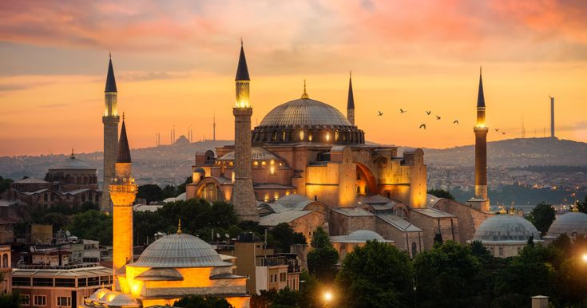

Ayasofya, İstanbul'un en önemli tarihi yapılarından biridir. Bizans döneminde kilise olarak inşa edilmiş, daha sonra camiye dönüştürülmüştür. Günümüzde hem tarihi hem de mimari açıdan büyük bir öneme sahiptir.
| Özellik | Detay |
|---|---|
| Mimar | İsidoros ve Anthemios |
| Yapım Yılı | 532 - 537 |
| Yükseklik | 56 Metre |
| Konum | Sultanahmet, İstanbul |
İstanbul, Sultanahmet